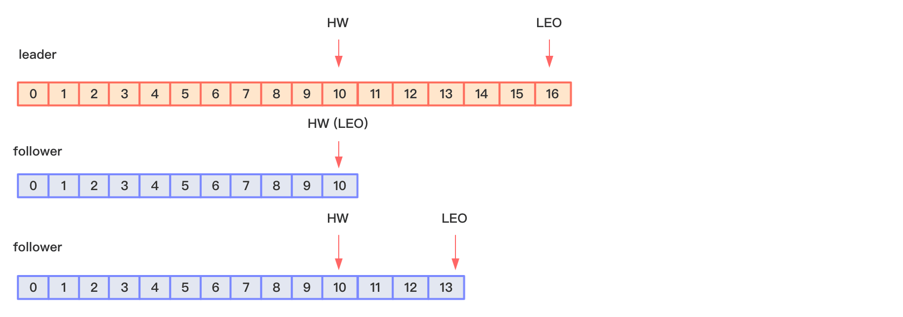

Kafka生产者用于生产消息。通过前面的内容我们知道，Kafka的topic可以有多个分区，那么生产者如何将这些数据可靠地发送到这些分区？生产者发送数据的不同的分区的依据是什么？针对这两个疑问，这节简单记录下。
为何要分区
方便在集群中扩展，每个分区Partition可以通过调整以适应它所在的机器，而一个 topic又可以有多个Partition组成，因此整个集群就可以适应任意大小的数据了；
可以提高并发，因为Kafka可以以Partition为单位进行读写。
生产者发送数据到不同分区的依据
以Kafka-clients依赖为例，生产者生产的消息通过ProducerRecord对象表示，其重载了6个构造方法：
1 | public ProducerRecord (String topic, Integer partition, Long timestamp, K key, V value, Iterable<Header> headers) |
指明 partition 的情况下，直接将指明的值直接作为 partiton 值；
没有指明 partition 值但有 key 的情况下，将 key 的 hash 值与 topic 的 partition 数进行取余得到 partition 值。所以，如果希望某组消息在Kafka集群全局有序，可以通过指定相同的消息key来实现；
既没有 partition 值又没有 key 值的情况下，第一次调用时随机生成一个整数（后 面每次调用在这个整数上自增），将这个值与 topic 可用的 partition 总数取余得到 partition 值，也就是常说的 round-robin 算法。
数据可靠性的保证
数据可靠性指的是： producer 发送的数据，能可靠的发送到指定的 topic。
ack
topic 的每个 partition 收到 producer 发送的数据后，都需要向 producer 发送 ack（acknowledgement 确认收到），如果 producer 收到 ack，就会进行下一轮的发送，否则重新发送数据。
副本同步策略主要有如下两种：
| 策略 | 优点 | 缺点 |
|---|---|---|
| 半数以上完成同步，就发送 ack | 延迟低 | 选举新的 leader 时，容忍 n 台节点的故障，需要 2n+1 个副本 |
| 全部完成同步，才发送ack | 选举新的 leader 时，容忍 n 台节点的故障，需要 n+1 个副本 | 延迟高 |
Kafka 选择了第二种方案，原因如下：
- 同样为了容忍 n 台节点的故障，第一种方案需要 2n+1 个副本，而第二种方案只需要 n+1 个副本，而 Kafka 的每个分区都有大量的数据，第一种方案会造成大量数据的冗余。
- 虽然第二种方案的网络延迟会比较高，但网络延迟对 Kafka 的影响较小。
对于某些不太重要的数据，对数据的可靠性要求不是很高，能够容忍数据的少量丢失， 所以没必要等所有 follower 全部接收成功，于是 Kafka 为用户提供了三种可靠性级别，用户根据对可靠性和延迟的要求进行权衡， 选择以下的acks 参数配置：
0：producer 不等待 broker 的 ack，这一操作提供了一个最低的延迟，broker 一接收到还 没有写入磁盘就已经返回，当 broker 故障时有可能丢失数据；
1：producer 等待 broker 的 ack，partition 的 leader 落盘成功后返回 ack，如果在 follower 同步成功之前 leader 故障，那么将会丢失数据；
-1（all）：producer 等待 broker 的 ack，partition 的 leader 和 follower 全部落盘成功后才 返回 ack。但是如果在 follower 同步完成后，broker 发送 ack 之前，leader 发生故障，那么会造成数据重复。
ISR
由于Kafka副本同步策略选择的是表格中的第二种，即等待所有follower副本同步完成，才发送ack，那么就会带来如下问题，设想下：leader 收到数据，所有 follower 都开始同步数据， 但有一个 follower，因为某种故障，迟迟不能与 leader 进行同步，那 leader 就要一直等下去， 直到它完成同步，才能发送 ack。这个问题怎么解决呢？
Leader 维护了一个动态的 in-sync replica set (ISR)，意为和 leader 保持同步的 follower 集 合。当 ISR 中的 follower 完成数据的同步之后，leader 就会给 follower 发送 ack。如果 follower 长时间未向 leader 同步数据 ， 则该 follower 将被踢出ISR ， 该时间阈值由replica.lag.time.max.ms参数设定。Leader 发生故障之后，就会从 ISR 中选举新的 leader。
数据一致性问题
由于我们并不能保证Kafka集群中每时每刻follower的长度都和leader一致（即数据同步是有时延的），那么当leader挂掉选举某个follower为新的leader的时候（原先挂掉的leader恢复了成为了follower），可能会出现leader的数据比follower还少的情况。为了解决这种数据量不一致带来的混乱情况，Kafka提出了以下概念：

- LEO（Log End Offset）：指的是每个副本最后一个offset；
- HW（High Wather）：指的是消费者能见到的最大的 offset，ISR 队列中最小的 LEO。
针对这个规则：
当follower发生故障时：follower 发生故障后会被临时踢出 ISR，待该 follower 恢复后，follower 会读取本地磁盘记录的上次的 HW，并将 log 文件高于 HW 的部分截取掉，从 HW 开始向 leader 进行同步。等该 follower 的 LEO 大于等于该 Partition 的 HW，即 follower 追上 leader 之后，就可以重新加入 ISR 了。
当leader发生故障时：leader 发生故障之后，会从 ISR 中选出一个新的 leader，之后，为保证多个副本之间的数据一致性，其余的 follower 会先将各自的 log 文件高于 HW 的部分截掉，然后从新的 leader 同步数据。
Exactly Once
将服务器的 ACK 级别设置为-1，可以保证 Producer 到 Server 之间不会丢失数据，即 At Least Once 语义。相对的，将服务器 ACK 级别设置为 0，可以保证生产者每条消息只会被 发送一次，即 At Most Once 语义。
At Least Once 可以保证数据不丢失，但是不能保证数据不重复；相对的，At Least Once 可以保证数据不重复，但是不能保证数据不丢失。但是，对于一些非常重要的信息，比如说 交易数据，下游数据消费者要求数据既不重复也不丢失，即 Exactly Once 语义。在 0.11 版 本以前的 Kafka，对此是无能为力的，只能保证数据不丢失，再在下游消费者对数据做全局 去重。对于多个下游应用的情况，每个都需要单独做全局去重，这就对性能造成了很大影响。 0.11 版本的 Kafka，引入了一项重大特性：幂等性。所谓的幂等性就是指 Producer 不论 向 Server 发送多少次重复数据，Server 端都只会持久化一条。幂等性结合 At Least Once 语 义，就构成了 Kafka 的 Exactly Once 语义。即：
要启用幂等性，只需要将 Producer 的参数中 enable.idompotence 设置为 true 即可。Kafka 的幂等性实现其实就是将原来下游需要做的去重放在了数据上游。开启幂等性的 Producer 在 初始化的时候会被分配一个 PID，发往同一 Partition 的消息会附带 Sequence Number。而 Broker 端会对<PID, Partition, SeqNumber>做缓存，当具有相同主键的消息提交时，Broker 只 会持久化一条。
生产者事务
Kafka 从 0.11 版本开始引入了事务支持。事务可以保证 Kafka 在 Exactly Once 语义的基础上，生产和消费可以跨分区和会话，要么全部成功，要么全部失败。
为了实现跨分区跨会话的事务，需要引入一个全局唯一的 Transaction ID，并将 Producer获得的PID 和Transaction ID 绑定。这样当Producer 重启后就可以通过正在进行的 Transaction ID 获得原来的 PID。
为了管理 Transaction，Kafka 引入了一个新的组件 Transaction Coordinator。Producer 就是通过和 Transaction Coordinator 交互获得 Transaction ID 对应的任务状态。Transaction Coordinator 还负责将事务所有写入 Kafka 的一个内部 Topic，这样即使整个服务重启，由于事务状态得到保存，进行中的事务状态可以得到恢复，从而继续进行。
「尚硅谷大数据技术之 Kafka」 学习笔记